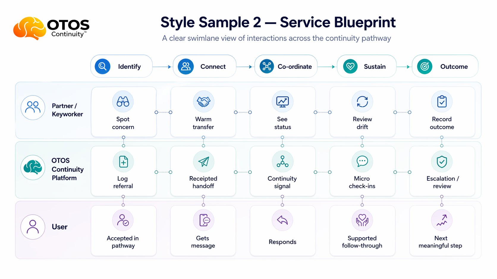

Pathway view
From touchpoint to visible thread.
A person is seen. A touchpoint is logged. A next step is offered. The handoff either lands, stalls or disappears. OTOS makes that visible enough for humans to act.

Ripple cost
The cost is never only clinical.
When ADHD is missed and addiction becomes the visible crisis, the ripple spreads through emergency care, family, police, housing, work, recovery and community services.